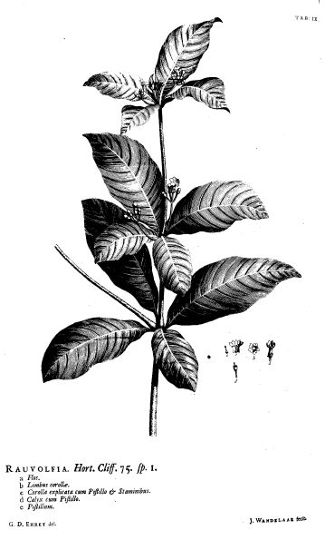

सर्पगंधाSarpagandha
Rauvolfia serpentina · Apocynaceae · FLR-0182

- Scientific name
- Rauvolfia serpentina (L.) Benth. ex Kurz
- Family
- Apocynaceae
- Hindi
- सर्पगंधा
- Local names
- sarpagandha, sarpgandha, chhota chand, chota chand, chandrabhaga
- Status here
- native
- Movement
- Resident, here all year
- IUCN
- VU
- Review
- audited and independently read
When to look कब देखें
Present all year.
Uses and possibilities उपयोग और संभावनाएँ
“Traditional medicine” means a documented traditional use, not a claim that it works. Nothing on this page is medical advice.
Drawn from the documented uses in the profile below, where each is labelled traditional, current or a research lead. All uses →
Tell it apart from इनसे अलग पहचानें
सर्पगंधा / Sarpagandha
Rauvolfia serpentina (L.) Benth. ex Kurz — Apocynaceae
सर्पगंधा — भारतीय वनों की एक गहरी जड़ों वाली झाड़ी जिसकी गंध सर्पों को दूर रखती है — इसी से नाम पड़ा। पत्तियाँ चमकदार, फूल छोटे सफ़ेद-गुलाबी। मूल आयुर्वेद में उच्च रक्तचाप, बेचैनी और अनिद्रा की दवा के रूप में जाना जाता था। 1950 के दशक में वैज्ञानिकों ने इससे रेसरपीन अलग किया, जो विश्व की पहली उच्च रक्तचाप की दवाई बन गई। लेकिन यह बहुत विषैली है। भारत के संरक्षित और वर्जित पौधों की सूची में है।
Quick Identification त्वरित पहचान
| Feature | Description |
|---|---|
| Habit | Understorey shrub, 30–80 cm, sparsely branched, often with a single main stem |
| Bark | Smooth, light brown to greyish, with distinctive pale lenticels |
| Leaves | Oppositely arranged or in whorls of 3, lanceolate, 5–12 cm, dark green, glossy, entire margin, aromatic when crushed |
| Flowers | Small, white tinged with pink, 5-lobed, in terminal cymes; fragrant |
| Fruit | Pair of small drupe-like structures (2–4 mm), black when ripe |
| Roots | Deep, fibrous, extending into soil |
| The test | Leaves are strongly scented when crushed — distinctive aromatic odour |
Field tip: An understory shrub in moist deciduous forest edges with glossy, lanceolate leaves arranged opposite or in threes, and a distinct smell when crushed. The small white-pink flowers and very small black fruits are diagnostic. Do not handle excessively — the plant is toxic.
हिंदी — कैसे पहचानें: वन के छायादार हिस्से में झाड़ी, चमकदार पत्तियाँ आमने-सामने या तिहरी, तेज़ गंध, छोटे सफ़ेद-गुलाबी फूल, काले छोटे फल।
Morphology आकारिकी
Biometrics (Indian forest populations):
| Measurement | Range |
|---|---|
| Height | 30–80 cm (occasionally to 1 m) |
| Leaf length | 5–12 cm |
| Leaf width | 1.5–3 cm |
| Flower diameter | 5–7 mm |
| Fruit | 2–4 mm |
Stem: Sparsely branched; bark smooth, light brown with pale lenticels; wood white to pale yellow.
Leaves: Opposite or in whorls of three, lanceolate to oblanceolate, acuminate, entire, glabrous, with prominent midrib and lateral veins. Aromatic oil in the leaves is the source of the sarpagandha scent. Leaves contain multiple alkaloids including reserpine, rescinnamine, ajamaline and yohimbine.
Flowers: Bisexual, white or pale pink, 5-petalled, in terminal or axillary cymes. Calyx and corolla 5-lobed. Anthers adnate to the stigma, forming a gynostegium. Flowering June–August.
Fruit: A pair of small drupe-like drupelets (each 2–4 mm), initially greenish, turning black at maturity. Ripen August–October.
हिंदी: पत्तियाँ विषैले अलकलॉइड से भरी होती हैं — रेसरपीन, रेसिन्नामाइन, अजामालीन। फूल छोटे, गुलाबी-सफ़ेद; फल बहुत छोटे, काले।
Behaviour & Ecology व्यवहार और पारिस्थितिकी
A shade-loving understory shrub of moist deciduous and semi-evergreen forests, preferring disturbed ground and forest margins in regions with good monsoon rainfall. It grows in association with other forest herbs and in cultivated or abandoned agricultural land where shade is available.
The flowers are visited by small bees and butterflies; the fruits are eaten by birds and small mammals that disperse the seeds. The plant's aromatic leaves may repel some herbivores, though domestic cattle will browse it (with potential consequences).
The alkaloid content varies with growing conditions, season, and part of the plant (leaves > roots > stem > fruits).
हिंदी: वन के गहरे छायादार हिस्से में, बारिश वाली जगह, खेतों के किनारे। पक्षी फल खाते हैं; छोटी मधुमक्खियाँ आती हैं।
Life Cycle / Phenology जीवन चक्र
| Month / season | Event |
|---|---|
| January–May | Growth and leaf production; low flowering activity |
| June–August | Flowering; corymbs develop in terminal positions |
| August–October | Fruit ripening; seed dispersal |
| November–December | Fruit drop; leaves persist |
| Year-round | Perennial; may lose leaves in severe drought |
Reproduces by seed (dispersed by birds and mammals) and by vegetative regrowth from the base if cut.
हिंदी: जून-अगस्त में फूल, अगस्त-अक्टूबर में फल पकते हैं। पक्षी बीज फैलाते हैं।
Associated Species / Interactions संबंधित प्रजातियाँ
- Forest companions: Other understory herbs and shrubs typical of moist deciduous forest margins
- Fauna: mountain goat, small birds eating fruit; bees visiting flowers
Pests and Diseases कीट और रोग
Documented pest and disease records for this species are sparse. The plant's toxicity likely deters most herbivores. Fungal leaf spots and stem rot may occur in very wet conditions.
Agricultural / Human Relevance कृषि प्रासंगिकता
CAUTION: Toxicity statement. Rauvolfia serpentina is acutely toxic. All parts contain tropane and indole alkaloids; the root is the most concentrated. Ingestion causes severe poisoning: hypotension (dangerous drop in blood pressure), cardiac arrhythmias, respiratory depression, and death. Skin contact can cause dermatitis. The plant is not to be handled carelessly and is completely inappropriate for home use of any kind.
Legal status: Protected under Schedule VI of the Indian Forest Act (banned commercial harvest) and listed in CITES Appendix II (trade restricted). Its collection from the wild is prohibited in most Indian states. Cultivation is permitted under licence.
Documented traditional use and drug history (not a recommendation for use): In classical Ayurvedic texts (Charaka Samhita, Susruta Samhita), the root was documented for treating high fever, insomnia, agitation and snakebite envenomation. The Bower Manuscript and later Ayurvedic compendia mention its use by classical physicians. However, these historical references describe the plant as hazardous — overdose causing stupor and death is mentioned.
In the 1930s–1950s, Indian and Western researchers identified and extracted the alkaloid reserpine from Rauvolfia serpentina. In 1954, reserpine became the first truly effective antihypertensive drug, earning its place in pharmacological history. The drug was derived entirely from this plant (until synthetic analogues were developed later). Reserpine revolutionised hypertension treatment for over two decades. Later research revealed additional alkaloids — rescinnamine, yohimbine, ajmaline — with cardiovascular and neurological effects. The plant's traditional reputation as a medicine was vindicated, but at tremendous cost to wild populations, which were over-harvested to near extinction.
Today: Wild populations are depleted. Cultivation for pharmaceutical extraction is ongoing in a few regions. The plant is no longer used in home Ayurveda due to toxicity and legal restrictions. All pharmaceutical use is now through regulated, extracted reserpine or synthetic successors.
Research direction (a lead, not a result). The biology of alkaloid production in Rauvolfia and the ecological consequences of historical over-collection in the Western Ghats is an established research area. Conservation of remaining wild populations and sustainable cultivation are priorities for the Indian System of Medicine.
हिंदी — सावधानी: यह बहुत विषैला है। सभी भाग जहरीले हैं; जड़ सबसे ज़्यादा। निगलने से गंभीर ज़हर: रक्तचाप खतरनाक ढंग से गिरना, दिल की धड़कन बिगड़ना, साँस बंद होना, मृत्यु। घर पर इस्तेमाल बिल्कुल नहीं करना। भारत में संरक्षित है, व्यापार पर प्रतिबंध है।
दवा का इतिहास: आयुर्वेद में पुरानी ज़मानें में ज्वर और बेचैनी की दवा माना जाता था। 1950 के दशक में वैज्ञानिकों ने रेसरपीन अलग किया। यह दुनिया की पहली उच्च रक्तचाप की दवाई बन गई। लेकिन वन से इतनी खोद ली गई कि प्रजाति लगभग नष्ट हो गई। अब खेती की जाती है।
Expected Locally स्थानीय रूप से अपेक्षित
Not a field record. Written from published accounts for eastern Uttar Pradesh. No confirmed local sighting yet — if you have seen it, that is what the atlas needs.
अभी तक स्थानीय पुष्टि नहीं। यह विवरण प्रकाशित स्रोतों से है, किसी अवलोकन से नहीं।
Rauvolfia serpentina is expected in moist deciduous forest margins and shaded cultivated areas in the wetter parts of eastern UP, though its current distribution is uncertain due to historic collection pressure. The nearest published records are from the forested regions of the Vindhyan range and the eastern Deccan. If encountered in Basti or Ayodhya districts, a photograph with the distinctive glossy lanceolate leaves and scent documented would be a valuable first record.
Distribution वितरण
Global range: Tropical Asia, from India to Indonesia; centre of diversity in the Indian peninsula, particularly the Western Ghats and Eastern Ghats.
In India: Formerly widespread in moist deciduous forests from sea level to 1,500 m; now patchily distributed due to over-harvesting.
In Uttar Pradesh: Possibly present in moist forest margins and foothills; current status unclear; likely rare or locally extinct in cultivated plains.
In Basti district / eastern UP: Expected only in forested areas if any remain; the flat agricultural landscape of most of the district is unsuitable. Nearest known populations may be in the Himalayan foothills to the north.
Research Questions शोध प्रश्न
Anyone can investigate these | कोई भी इन प्रश्नों की जाँच कर सकता है
- Is Rauvolfia serpentina still present in any forest margins or protected areas in eastern UP? / क्या पूर्वी यूपी में वन के किनारे पर सर्पगंधा अभी भी है? — Survey moist forest margins in foothills.
- If found, what is the population size and structure (seedlings, juveniles, adults)? — Count and measure plants.
- Does the plant grow in abandoned cultivation or only in natural forest? — Document habitat type.
- What birds or mammals feed on the fruit? — Observe for an hour at fruiting time.
- Can a comparison of leaf alkaloid content from wild vs. cultivated plants be measured? — A technical question for laboratory work.
Similar Species मिलती-जुलती प्रजातियाँ
| Species | How to tell apart | हिंदी |
|---|---|---|
| periwinkle pink (Catharanthus roseus) | Pink or purple flowers; also toxic; cultivated, not wild forest; leaves more oval | गुलाबी-बैंगनी फूल, खेत में |
| Other Apocynaceae shrubs | Different leaf arrangement, different flowers, no distinctive scent | अलग पत्तियाँ, अलग फूल, गंध नहीं |
Field rule: Glossy lanceolate leaves opposite or in threes, strong distinctive scent when crushed, small white-pink flowers, forest understory — sarpagandha. Do not eat any part.
Taxonomy & Classification वर्गीकरण
Original description. First scientifically described as Ophioxylon serpentinum by Linnaeus (1753); later transferred to Rauvolfia by Bentham (1876). Type locality: India.
Subspecies. Rauvolfia serpentina (L.) Benth. ex Kurz is the accepted binomial. Subspecific divisions have been proposed based on geographic origin but are not widely adopted.
Family and order placement. Apocynaceae (dogbane family), order Gentianales. The family includes many alkaloid-rich plants (oleander, periwinkle, milkweed).
Phylogenetic notes. The genus Rauvolfia is Neotropical in origin and diversified in the Old World tropics. Molecular analyses confirm its close relationship to Catharanthus (periwinkle) and other Apocynaceae.
IUCN status rationale. Vulnerable (VU). Historically over-harvested from the wild for pharmaceutical extraction; wild populations remain fragmented and depleted. Protected in most Indian states. Recovery depends on cultivation and habitat protection.
Photo Gallery फोटो गैलरी
Photos needed आवश्यक फोटो
- [ ] Plant in forest understory (वन में पौधा)
- [ ] Glossy lanceolate leaves (चमकदार पत्तियाँ)
- [ ] Flowers (छोटे सफ़ेद-गुलाबी फूल)
- [ ] Fruit (छोटे काले फल)
No photos yet — add field photos to media/species/sarpagandha/ and run node scripts/sync_photos.js.
References संदर्भ
- Linnaeus, C. (1753). Species Plantarum, vol. 2. Stockholm. [original description, as Ophioxylon serpentinum]
- Bentham, G. (1876). Genera Plantarum. Reeve, London.
- Kirtikar, K.R. & Basu, B.D. (1935). Indian Medicinal Plants, 2nd ed., vol. 3. Lalit Mohan Basu, Allahabad.
- Mukherjee, B. & Dey, A.C. (1966). Studies on Indian medicinal plants: chemical investigation of Rauvolfia serpentina (L.) Benth. Indian Journal of Pharmacy 28: 177–188.
- Atal, C.K. & Kapur, B.M. (eds.) (1982). Cultivation and Utilization of Medicinal Plants. CSIR, New Delhi.
- Puri, H.S. (2002). Rasayana: Ayurvedic Herbs for Longevity and Rejuvenation. Taylor & Francis, London.
- GBIF Occurrence Data — Rauvolfia serpentina, India (2026).
Source file: species/flora/medicinal/sarpagandha.md